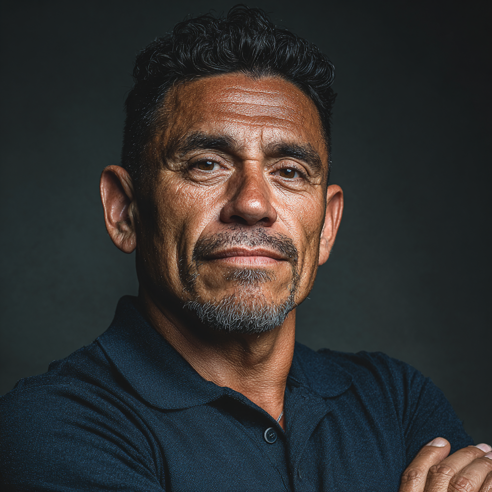
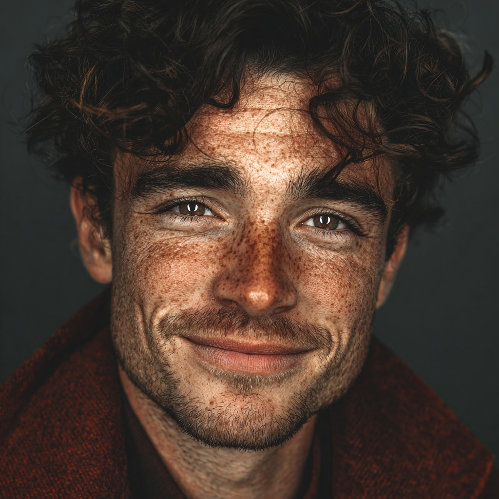

Joelle Abaew
80th Anita M. Perlman International N'siah
Annual Report Showcase
Teen leadership, Jewish pride, global connection, and community impact.
Dear Friends,
BBYO has spent more than a century adapting to moments of change. This year, that meant redirecting teen travel, deepening global connection, and continuing to build joyful Jewish life in communities around the world.
From major gatherings to local experiences and learning programs, participants found ways to lead with resilience, curiosity, and purpose.
Read full letter
80th Anita M. Perlman International N'siah
Chief Executive Officer
100th Grand Aleph Godol
Board Chair
Year in Numbers
$1,471,852 helped more teens access programs, travel, leadership experiences, and community.
Teens performed more than 100,000 hours of volunteer service in communities worldwide.
6,502 teens attended more than 85 conventions across the Movement.
5,518 new members in North America joined BBYO this year.
More than 4,100 alumni took part in 50 events, reconnecting with teens and one another.
3,431 participants from 46 countries joined a flagship global gathering this year.
The organization gives people the tools, trust, and support to turn ideas into programs, decisions, and measurable progress.
Read the sectionAcross the year, core initiatives, gatherings, and learning experiences helped participants build skills, deepen connection, and bring the organization’s purpose to life.
Across communities and regions, the organization expanded participation, deepened relationships, and created more pathways for people to engage with its mission.
Impact Stories
I came in looking for a program and left with a clearer sense of what I could build next. The experience gave me people, confidence, and a reason to keep going.

Leo Ramirez
The biggest change was realizing I did not have to wait for permission to lead. I had support, a structure, and a community ready to show up.
Mina Ellis
What stayed with me was the momentum. One conversation became a project, then a team, then something that reached far beyond the room.
Samir Cole
The year gave me a practical way to connect my goals to something larger than my own role.
Nora Blake
I found people who challenged my assumptions and helped me turn an idea into a real plan.
Elias Quinn